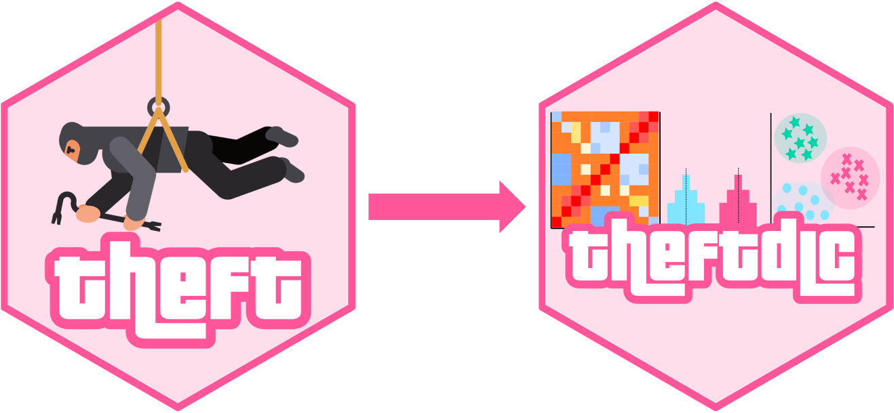
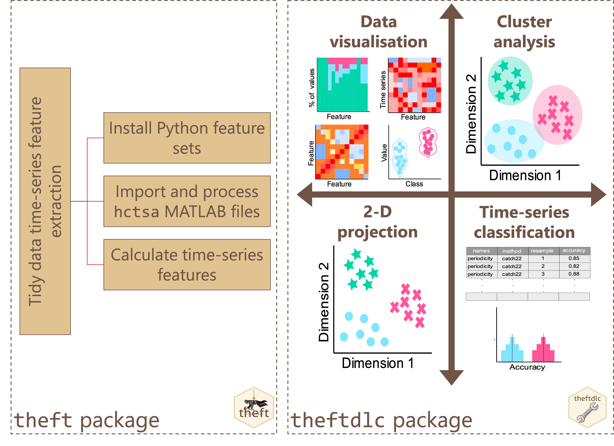

Tools for Analysing and Interpreting Time Series Features
Installation
Coming to CRAN soon!
You can install the development version of theftdlc from
GitHub using the following:
devtools::install_github("hendersontrent/theftdlc")General purpose
The theft
package for R facilitates user-friendly access to a structured
analytical workflow for the extraction of time-series features from six
different feature sets (or a set of user-supplied features):
"catch22", "feasts", "Kats",
"tsfeatures", "tsfresh", and
"TSFEL".
theftdlc extends this feature-based ecosystem by
providing a suite of functions for analysing, interpreting, and
visualising time-series features calculated using theft.
Functionality including data quality assessments and normalisation
methods, low dimensional projections (linear and nonlinear), data matrix
and feature distribution visualisations, time-series classification
machine learning procedures, statistical hypothesis testing, and various
other statistical and graphical tools.

A high-level overview of how the theft ecosystem for R
is typically accessed by users is shown below. Many more functions and
options for customisation are available within the packages.

What’s in a name?
theftdlc means ‘downloadable content’ (DLC) for
theft—just like you get DLCs
and expansions for video games.
Citation
If you use theft or theftdlc in your own
work, please cite both the paper:
T. Henderson and Ben D. Fulcher. Feature-Based Time-Series Analysis in R using the theft Package. arXiv, (2022).
and the software:
To cite package 'theft' in publications use:
Trent Henderson (2024). theft: Tools for Handling Extraction of
Features from Time Series. R package version 0.6.1.
https://hendersontrent.github.io/theft/
A BibTeX entry for LaTeX users is
@Manual{,
title = {theft: Tools for Handling Extraction of Features from Time Series},
author = {Trent Henderson},
year = {2024},
note = {R package version 0.6.1},
url = {https://hendersontrent.github.io/theft/},
}
To cite package 'theftdlc' in publications use:
Trent Henderson (2024). theftdlc: Tools for Analysing and
Interpreting Time Series Features. R package version 0.1.0.
https://hendersontrent.github.io/theftdlc/
A BibTeX entry for LaTeX users is
@Manual{,
title = {theftdlc: Tools for Analysing and Interpreting Time Series Features},
author = {Trent Henderson},
year = {2024},
note = {R package version 0.1.0},
url = {https://hendersontrent.github.io/theftdlc/},
}